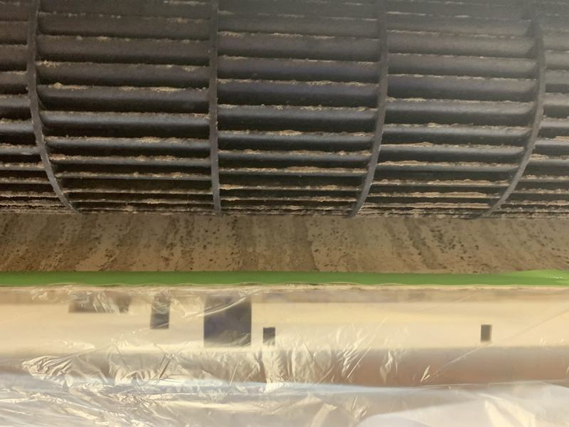
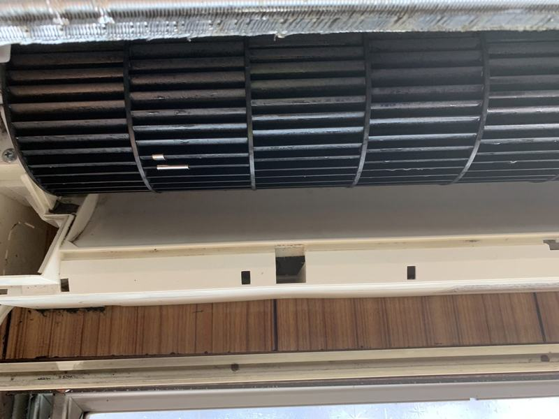
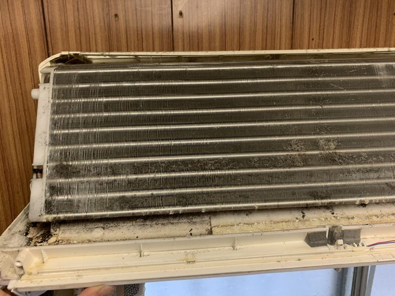
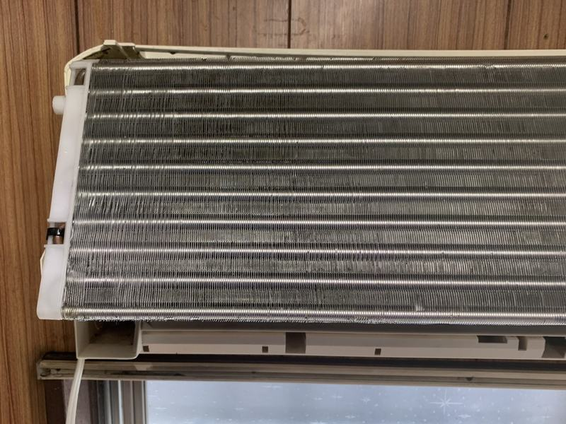
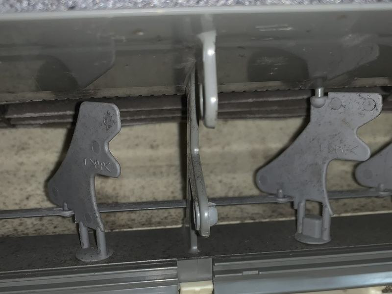
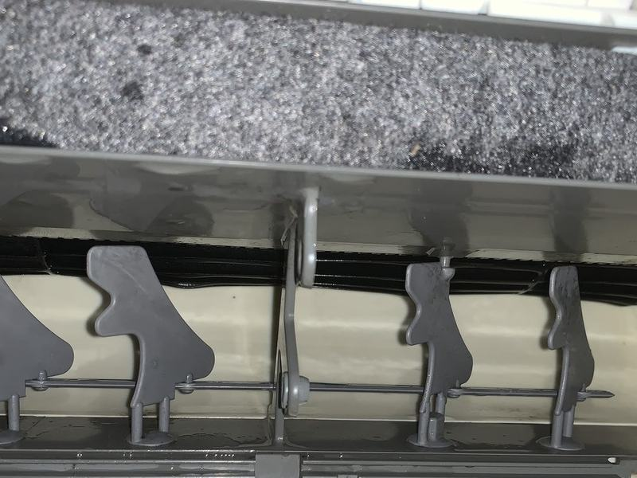
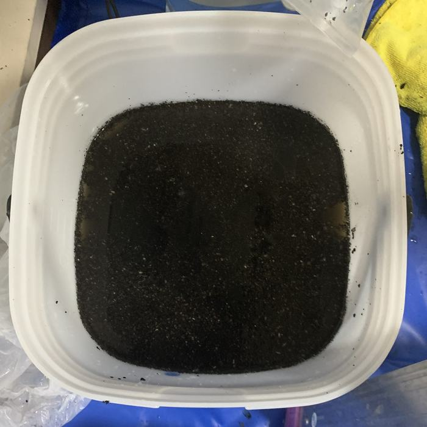
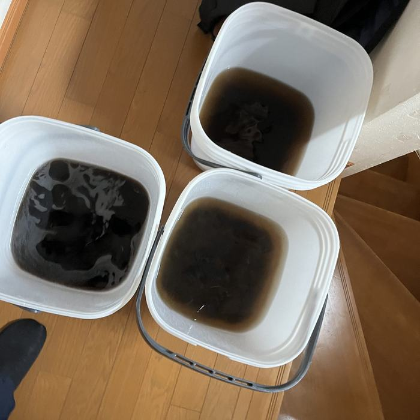

✓ 東京・千葉・神奈川／自社の職人が伺います
送風ファンを外して、奥まで洗います。

BEFORE
AFTERエアコンの送風ファン｜実際の施工前と施工後（同じ箇所）
{{MANZOKU_NOTE}}
※2 Googleクチコミ 23件・平均★5.0（2026年9月時点）
★★★★★結果、大手のエアコン一台分のお値段で2台お掃除していただき、しかも迅速で丁寧に仕上げてくださいます。K様／Googleクチコミ（2026年4月）・他社から乗り換えたお客様
ひとつでも当てはまったら、内部にカビが出ています。フィルター掃除では届かない、熱交換器とファンの汚れが原因です。金額を見る
これらはすべて、フィルター掃除では届かない熱交換器とファンの汚れが原因です。
知らない会社の人が来るのでは？
下請けに出しません。ご予約を受けた私たち自身が伺います。ご連絡から作業当日まで、担当は変わりません。
当日、追加料金を言われるのでは？
お見積り以上の追加請求はありません。別にかかる可能性があるのは、駐車スペースが無い場合のコインパーキング代（実費・事前にお伝えします）と、5〜7月・12月の繁忙期加算だけです。
水漏れや故障が心配です
床・壁・家財を覆う養生を徹底し、洗浄後は必ず試運転で排水・動作・異音を確認してからお引き渡しします。作業前に設備の状態を拝見し、リスクがある場合は着手前にお伝えします。万一に備え、損害賠償保険にも加入しています。

BEFORE
AFTER熱交換器（アルミフィン）冷房中に結露する場所。年中湿っているため、カビの温床になります。

BEFORE
AFTER吹出口・ルーバー「送風口に黒い点が見える」の正体。ここが見えているときは、奥はもっと汚れています。


洗浄で出た汚水専用の洗剤と高圧洗浄機で内部を洗い流したあとの水です。作業後は、この水をお客様にもご覧いただいています。
※いずれも実際の施工写真です。施工前と施工後は同じ箇所を撮影しています。汚れや設備の状態により、仕上がりや出てくる汚水の量は異なります。
計算しなくても大丈夫です。近いものを押すと、そのまま下の計算機に入ります。
10,780円作業は60分
19,360円2台以上はネット申込特典 −2,200円
17,380円作業は120分
※表示はすべて税込です。金額は下の計算機で選んでいる「ご希望の時期」に合わせて変わります（5〜7月・12月は1台あたり3,300円が加算）。駐車スペースが無い場合は、コインパーキング代を実費でいただきます（金額は事前にお伝えします）。
入力は3つだけ。この金額以上の請求は発生しません。
※駐車スペースがない場合は、コインパーキング代を実費でいただきます。金額は事前にお伝えします。
LINEご登録の方には、防カビコート（通常 3,630円）を無料でお付けしています。カビの再発を抑えるコーティングです。
見積り金額に、あとから消費税を足すことはありません。
当日その場で金額が変わることはありません。オプションをその場で追加したい場合だけ、金額をご説明し、ご了承いただいてから作業します。
駐車スペースが無い場合のコインパーキング代（実費・事前にお伝えします）と、5〜7月・12月の繁忙期加算（1台あたり3,300円）です。お急ぎでなければ、4月・8〜11月のご予約がいちばんお得です。
前払い・事前の振込はありません。お支払いは作業が終わってからその場で。クレジット／デビットカード（Visa・Mastercard・JCB・American Express・Diners Club・Discover）、交通系IC・iD・QUICPay、PayPay・d払い・楽天ペイ・au PAY・メルペイがご利用いただけます。
この業界はフランチャイズと下請けが主流です。ONE HITTER は違います。
ご予約を受けた私たち自身が伺います。当日になって、知らない会社の作業員が来ることはありません。ご連絡から作業まで、担当は変わりません。
間に会社が入らないぶん、紹介手数料が乗りません。訪問営業も電話営業もしていません。その分のコストを、そのまま価格にしています。品質を落として下げているわけではありません。
不要な箇所まで抱き合わせで売ることをしません。今日いちばん困っている1台だけのご依頼で構いません。
作業した本人が責任を負います。「本部に確認します」で止まることがありません。万一に備え、損害賠償保険にも加入しています。
毎回丁寧でお客様第１の説明に関心しています。クリーニング後は汚れを見せてくれるので、こんなに汚れていたんだと確認できます。Y様／Googleクチコミ（2026年4月）★★★★★
ご在宅のまま完了します。ノーマルエアコンで60分、お掃除機能付きは120分が目安です。
床・壁・家財をシートで完全に覆います。
カバー・ルーバー・ファンを取り外します。
汚れの質を見て、洗剤を選びます。
熱交換器とファンを専用機材で洗浄します。
洗剤成分が残らないよう、十分に流します。
分解した部品を元通りに戻します。
動作・排水・異音を確認します。
お客様と一緒に、仕上がりと回収した汚水を確認します。
お願いする前と同じ設定温度だと寒く感じるほど効き目が変わりました！ もっと早くお願いすればよかったです。58歳 女性
エアコン掃除を頼むのが初めてだったので不安が大きかったですが、思ってた以上に丁寧な感じで、掃除する前に段階を踏んでから取り掛かっていたのでよかった。担当してくれた方も気さくな人だったので不安はなくなりました。また利用したいです。62歳 女性
大満足です。買い替えようかと諦めていたエアコンが見事に蘇りました。35歳 女性
※公式サイト「お客様の声」に掲載している、実際にいただいたご感想です。文面は原文のまま、年代・性別もご本人の申告どおり掲載しています。
はい、ご在宅をお願いしています。作業前に汚れの状態を、作業後に仕上がりを一緒にご確認いただくためです。ノーマルエアコンで60分ほどですので、その間は別のお部屋でお過ごしいただいて構いません。
可能です。分解・洗浄・組み立てまで行い、原状に戻してお引き渡しします。管理会社への事前確認が必要かどうかは、契約内容によりますのでご確認ください。
使用頻度によりますが、目安は1〜2年に一度です。毎日長時間つけるお部屋や、ペット・喫煙のあるお部屋は、より短い間隔をおすすめしています。
はい。メニューに記載のない箇所のお掃除も柔軟に対応しています。お気軽にご相談ください。
※伊豆・小笠原諸島および一部の山間部は、お伺いできない場合があります。郵便番号でご確認いただくか、お電話・LINEでお問い合わせください。
入力は5項目、1分ほどです。予約の時点では費用は発生しません。ご返信は当日中、遅くとも翌営業日にいたします。
しつこい営業・訪問はいたしません